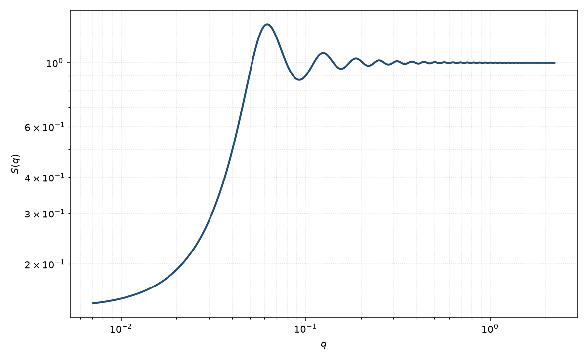

硬球结构因子
hard sphere
适用场景
中性或短程排斥的球形胶体，相互作用可近似为不可穿透硬核时，用 Percus–Yevick（PY）硬球结构因子。典型对象：浓胶乳、微乳液滴、蛋白质在高盐下的有效硬球，以及只需要一个体积分数来解释低 $q$ 压低与第一相关峰的体系。
稀溶液 $S(q)\approx 1$，不必加本页。出现长程静电排斥（低盐带电胶体）应改用 Hayter–MSA；短程黏性吸引用黏性硬球或方阱。两种半径的混合物用二元硬球，而不是把一元 PY 硬球平均两次。
物理图像
Ornstein–Zernike 方程在 PY 闭包下对硬球有 Wertheim–Thiele 解析解。直接相关函数在直径 $\sigma=2R$ 内是三次多项式、核外为零。Ashcroft 与 Lekner 把它写成 $S(q)=[1-n\hat{c}(q)]^{-1}$ 的闭式，供液体与胶体散射使用。
$S(0)=(1-\eta)^4/(1+2\eta)^2$ 随体积分数 $\eta$ 迅速下降，这就是渗透压缩率被硬核压低。第一峰约在 $q\sigma\sim 2\pi$，随 $\eta$ 增高而变锐。取向对球无影响；磁性通道若只有核衬度变化，仍乘同一 $S(q)$。
示意图

核心公式
令 $\eta$ 为硬球体积分数，$x=q\sigma$，$\sigma=2R$。PY 直接相关在核内
$$c(r)=-\alpha-\beta(r/\sigma)-\gamma(r/\sigma)^3\quad(r\lt\sigma),\qquad c(r)=0\ (r\gt\sigma),$$ $$\alpha=\frac{(1+2\eta)^2}{(1-\eta)^4},\quad \beta=\frac{-6\eta(1+\eta/2)^2}{(1-\eta)^4},\quad \gamma=\frac{\eta}{2}\alpha.$$结构因子 $S(q)=[1-n\hat{c}(q)]^{-1}$，$n=6\eta/(\pi\sigma^3)$。$\hat{c}$ 的闭式见 Ashcroft & Lekner。前向值 $S(0)=(1-\eta)^4/(1+2\eta)^2$。
参数表
| 参数 | 符号 | 含义 | 单位 | 典型范围 |
|---|---|---|---|---|
| 硬球半径 | $R$ | 硬核半径，$\sigma=2R$ | Å | 与形式因子半径可比 |
| 体积分数 | $\eta$ | 硬球占据的体积分数 | 无量纲 | $0.02$–$0.45$（PY 在更高密度变差） |
| 标度 / 本底 | $\mathrm{scale}$, $B$ | 若写成 $I=P\,S+B$ 的前置与本底 | 与强度单位一致 | 实验相关 |
拟合注意
可辨识性：$S(q)$ 的半径（或直径）与形式因子半径、体积分数与标度在同时自由拟合时高度退化。先在稀溶液固定 $P(q)$，再用浓度系列的低 $q$ 变化约束 $S(q)$；不要把 $P(q)$ 与 $S(q)$ 的全部参数一起放开。 硬球 $R$ 应与 $P(q)$ 的几何半径一致，或明确它是有效相互作用半径（溶剂化层）。
取向对球无关。尺寸多分散会抹浅 $S(q)$ 的峰；严格来说一元 PY 假定单分散直径。磁性：磁 $P(q)$ 仍乘同一核 $S(q)$，不要给磁通道另造一套 $\eta$。
PY 在 $\eta\gtrsim 0.45$ 或需要热力学自洽时变差。相关峰很锐且峰位比接近立方格子时，应改用准晶而不是把 $\eta$ 推向结晶。
相近模型
- 黏性硬球结构因子 — 硬核上再加零程黏性吸引。
- 方阱结构因子 — 有限宽度的吸引方阱。
- Hayter–MSA 结构因子 — 带电胶体的屏蔽库仑排斥。
- 双 Yukawa 结构因子 — 同时需要吸引与排斥尾。
- 二元硬球 — 两种直径的 PY 混合物 $S_{ij}$。
参考文献
- Percus, J. K.; Yevick, G. J. Analysis of classical statistical mechanics by means of collective coordinates. Phys. Rev. 1958, 110, 1–13. DOI: 10.1103/PhysRev.110.1
- Ashcroft, N. W.; Lekner, J. Structure and resistivity of liquid metals. Phys. Rev. 1966, 145, 83–90. DOI: 10.1103/PhysRev.145.83
- Wertheim, M. S. Exact solution of the Percus–Yevick integral equation for hard spheres. Phys. Rev. Lett. 1963, 10, 321–323. DOI: 10.1103/PhysRevLett.10.321